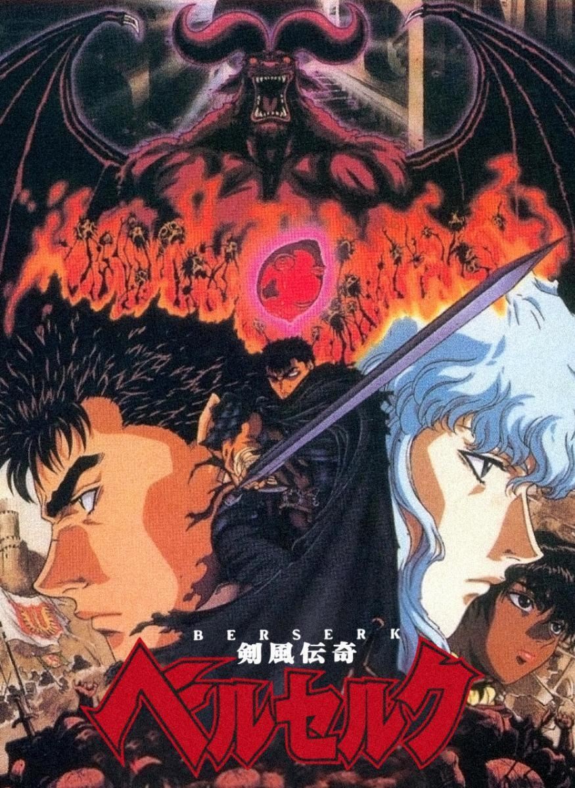

Por: Manuel Saís Peña Jiménez - 10-12-2025
He aquí una franquicia que me ha dejado estupefacto y una sensación sombría de lo única que es esta serie.
Berserk, manga creado por el difunto mangaka Kentaro Miura, comenzó a publicarse en 1989. Con géneros como acción, fantasía oscura, psicológico, tragedia, demonios, horror, gore y sobrenatural, cuenta con 378 capítulos distribuidos en 42 volúmenes, junto con varias adaptaciones anime y películas recopilatorias.
La historia sigue a Guts, un exmercenario conocido como el “Espadachín Negro”, en su búsqueda de venganza. Tras una infancia llena de penurias, Guts encuentra a alguien en quien confiar, pero todo se desmorona cuando esa persona le arrebata todo lo importante. Portador de la marca del sacrificio, Guts está condenado a ser perseguido por demonios, enfrentando un destino lleno de tragedia, armado solo con una espada gigante y una voluntad inquebrantable.
Ambientada en una época que recuerda a la Europa medieval y renacentista, la historia comienza con el arco de la Edad Dorada. Guts, de 12 años, derrota a un caballero gigante, lo que llama la atención de Griffith, líder de la Banda del Halcón. Juntos, enfrentan innumerables batallas, pero la ambición de Griffith desencadena eventos oscuros que culminan en el sacrificio de toda la banda para que él se convierta en una deidad. Solo Guts y Casca sobreviven al terrible evento del Eclipse, marcados para siempre.
Definido por su capacidad de sobrevivir, Guts es un personaje violento pero noble, marcado por la tragedia desde su nacimiento. Su inquebrantable voluntad lo convierte en un símbolo de resistencia y perseverancia.
De origen humilde, Griffith es impulsado por un sueño inconmensurable. Su ambición lo lleva a sacrificar todo y a todos por alcanzarlo, generando opiniones divididas sobre su moralidad.
Casca es una mujer fuerte que elige seguir a Griffith tras ser rescatada por él. Su relación con Guts y Griffith evoluciona a lo largo de la serie, enfrentando numerosas pruebas.
Berserk es una obra única, llena de escenas sublimes que despiertan múltiples emociones. Aunque puede resultar conflictiva para algunos, su narrativa oscura y profunda la convierte en una experiencia inolvidable. Más que una simple lectura, es una obra que deja una marca indeleble en sus lectores. Sin duda, le otorgo 5 estrellas.
Referencias: